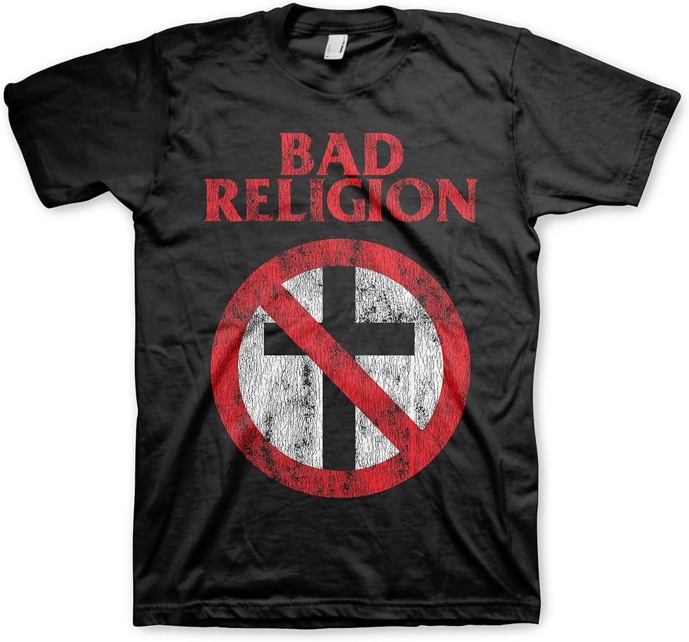

Punkbändi joka ei vain huuda
Bad Religion on outo instituutio. Kalifornialaisen punkbändin kappaleet ovat kolmen soinnun melodista punkia maustettuna lauluharmonioilla ja kestoltaan tyypillisesti noin kaksi minuuttia. Jo kappaleiden nimet, kuten Markovian process, kuitenkin vihjaavat, että nyt ei lauleta kolmesta tölkistä Lidlin kassissa. Yhtye perustettiin 1980 San Fernando Valleyn autotallissa, kun laulaja Greg Graffin oli 15-vuotias. Sen jälkeen se on tehnyt seitsemäntoista studiolevyä, joissa toistuvat samat aiheet: uskonnon kritiikki, korporaatiovalta, amerikkalainen laumakäyttäytyminen, ihmisen kyky itsepetokseen.
Graffin ei ole mikään kiljupunkkari. Hän väitteli Cornellissa 2003, ja hänen väitöskirjansa käsitteli evoluutiobiologian suhdetta uskontoon ja naturalismiin. Sen jälkeen hän on opettanut evoluutiota sekä Cornellissa että UCLA:ssa kiertueiden välissä. Tämä kuuluu sanoituksissa. Ne tarjoilevat harvoin valmiita julistuksia.
Parhaat Bad Religion -tekstit eivät vanhene päivänpoliittisten kohteidensa mukana. Niiden kohde on mekanismi.
“Robin Hood in Reverse” True North -levyltä (2013) on tästä hyvä esimerkki. Bändin omasta näkökulmasta biisi käsittelee Yhdysvaltain korkeimman oikeuden Citizens United -päätöstä ja korporaatiovallan oikeudellista normalisointia. Se on tunnistettavasti vasemmistolainen korporaatiokritiikki. Sen rakenteellinen havainto — instituutio joka lupaa suojata heikkoa mutta päätyy vahvistamaan vahvaa — kestää myös toisenlaisen luennan, jossa varsinainen mekanismi sijaitsee kokonaan muualla kuin Graffin ehkä ajatteli.

“Robin Hood in Reverse” ja Citizens United vs. FEC
Biisin avaus on lasten sormileikki: here is the church, there is the steeple, open up the door, corporations are people. Alkuperäisessä leikissä viimeinen rivi on “open the doors and see all the people” — sormet aukeavat ja sisällä paljastuu joukko ihmisiä, jotka muodostuvat ristissä olevista sormista. Graffin korvaa ihmiset korporaatioilla, ja samalla pudottaa “näkemisen” pois: kukaan ei enää avaa ovia katsoakseen, korporaatiot vain ovat siellä ihmisten paikalla. Tätä seuraa biisin tärkein retorinen ele: kaksi riviä järkyttynyttä hämmästystä. Wait, what did he say? What the fuck did he say?
Välitön kaikupohja on Mitt Romneyn vuoden 2011 Iowan messuilla lausuma “corporations are people” -repliikki. Syvempi kohde on Citizens United -päätös, jossa sama ajatus saa institutionaalisen muodon iskulauseen sijaan: perustuslaillisena oikeutuksena poliittiselle rahankäytölle. Päätös kumosi rajoituksia, jotka koskivat yritysten ja ammattiliittojen riippumattomia vaalimenoja. Yrityksistä ei tullut ihmisiä arkisessa mielessä, eikä päätös vapauttanut suoria lahjoituksia ehdokkaille samalla tavalla. Yritysten ja liittojen poliittinen viestintä tulkittiin ensimmäisen lisäyksen suojaamaksi puheeksi.
Kertosäkeen nine in black robes all went berserk viittaa korkeimman oikeuden tuomareihin: yhdeksän mustakaapuista kääntää pelin. Robin Hood -myytti kääntyy päinvastaiseksi. Oikeusjärjestelmä, jonka pitäisi suojata kansalaisia, suojaakin rikkaiden ja korporaatioiden vaikutusvaltaa.
Toisessa säkeistössä Graffin kääntää nimen “Citizens United” ensin toiveikkaaksi: citizens united, I was excited. Sanat erotettuna oikeustapauksesta tarkoittavat juuri sitä mitä ne sanovat — kansalaiset yhdistyneinä. Solidaarisuutta ja kollektiivista vastarintaa. Sitten kaikuu Sham 69:n vuoden 1978 punklaulun “If the Kids Are United” rivi: when the kids are united, they can never be divided.
Sham 69 oli englantilainen työväenluokan punkbändi, ja “If the Kids Are United” on klassinen solidaarisuuslaulu — punk-versio työväenliikkeen perinteisestä yhteenkuuluvuusvirrestä. Lukijalle, jolle Sham 69 ei ole tuttu, biisin teesi on yksinkertainen: jos pidämme yhtä, meitä ei voi voittaa. Tämä on kollektiivisen vastarinnan klassinen logiikka, ja Bad Religion on osa samaa traditiota.
Sanaleikki menee siis kolmessa kerroksessa: Citizens United on korkeimman oikeuden tapaus, joka mahdollistaa yritysten poliittisen rahankäytön; “kansalaiset yhdistyneinä” on toiveikas ajatus demokraattisesta solidaarisuudesta; Sham 69:n biisi on punkin oma traditio nuorisosta yhdistyneenä työväenluokan rintamassa. Ja sitten Graffin tappaa toivon yhdellä rivillä: but that was yesterday, there’s a brand new sham today. Sana sham (“petos, huijaus”) viittaa bändiin, mutta tarkoittaa, että koko ajatus kansalaisten tai työväen yhtenäisyydestä on nyt huijaus. Oikeasti yhdistyneitä ovat yritykset ja niitä suojaavat instituutiot.
Tämä on biisin ilmeinen luenta. Se toimii. Keskimmäinen säkeistö vihjaa kuitenkin toisesta tasosta, jonka bändi todennäköisesti tarkoitti vain finanssikriisin yleisluontoiseksi taustaksi:
It couldn’t last, they had to crash
Some parties are just made that way
But when the bell rings, the boys will sing
Swing low sweet precariat
Tästä alkaa toinen lukutapa. Some parties are just made that way — jotkut bileet on rakennettu loppumaan äkisti. Tämä on klassinen itävaltalaisen suhdanneteorian intuitio: matalat korot ja keinotekoinen luotontarjonta tuottavat vääriä hintasignaaleja, joiden varaan väistämättömän korjausliikkeen vaativa kupla rakentuu. Hayekin alkuperäisessä teoriassa crash on välttämätön korjausmekanismi.
Cantillon-efekti: raha ei tule yhteiskuntaan tasaisesti
Bad Religion ei kirjoittanut laulua keskuspankkipolitiikasta. Mutta finanssikriisin jälkeinen maailma antoi kappaleen nimelle toisen, ehkä vielä mielenkiintoisemman tulkinnan. Käänteinen Robin Hood voi olla myös rahapoliittinen järjestelmä, jossa uusi likviditeetti kulkee ensin niiden taseisiin, joilla jo on omaisuutta.
Jos keskuspankki kriisin jälkeen painaa korkoja alas ja ostaa omaisuuseriä, se ei pelkästään “elvyttä taloutta”. Se muuttaa hintasignaaleja. Korkokäyrän madaltuminen muuttaa kannattavuusarvioita kaikilla markkinoilla samanaikaisesti, ja varallisuuserien arvostuskertoimet nousevat kun diskonttokorko laskee. Tämä näyttää tekniseltä operaatiolta, mutta sen jakovaikutus on kaikkea muuta.
Richard Cantillon huomasi 1700-luvulla, että uusi raha kulkee talouteen kanavien kautta — ja ne jotka ovat lähimpänä rahan syntypistettä hyötyvät enemmän kuin ne jotka ovat kauempana. Kun Espanjaan virtasi hopeaa Amerikoista, uusi raha ei levinnyt talouteen tasaisesti. Ensimmäisinä siitä hyötyivät ne, joiden käsiin hopea ensin tuli: Habsburg-kruunu, saksalaiset ja genovalaiset pankkiirit, jotka olivat antaneet sille luottoa, sekä kaupankäyntiverkostot Sevillassa ja Cádizissa. Kun raha myöhemmin levisi laajemmalle, muut kohtasivat jo muuttuneet suhteelliset hinnat. Cantillonin pointti on rakenteellinen: rahan vaikutus riippuu myös siitä, missä, milloin ja kenen kautta se virtaa talouteen.
Modernissa rahajärjestelmässä vastaava reitti kulkee ennen kaikkea arvopaperimarkkinoiden kautta. Kun keskuspankki ostaa velkakirjoja, se painaa niiden tuottovaatimuksia alas. Kun turvallisten sijoitusten tuotto laskee, sijoittajat etsivät tuottoa muualta. Se nostaa osakkeiden, yrityslainojen, kiinteistöjen ja muiden omaisuuserien arvostuksia.
Tämä kuulostaa tekniseltä, mutta jakovaikutus on ilmeinen. Jos politiikka nostaa omaisuuserien hintoja, ensimmäisenä hyötyvät ne, joilla on jo omaisuutta. Palkansaaja voi hyötyä myöhemmin matalamman työttömyysriskin ja paremman suhdannetilanteen kautta. Omistaja saa tämän lisäksi nousevan taseen.
Finanssikriisin jälkeen keskuspankit tekivät sen, minkä ne katsoivat välttämättömäksi. Ne lisäsivät likviditeettiä, laskivat korkoja ja ostivat omaisuuseriä. Tavoite oli estää järjestelmän romahdus. Tavoite ei kuitenkaan tee keinosta neutraalia.
Tässä “Robin Hood in Reverse” alkaa toimia myös rahapolitiikan kuvana. Keskuspankit eivät jakaneet rahaa suoraan kansalaisille, vaan vakauttivat järjestelmää sen omien markkinakanavien avulla. Pelastus kulki pankkien, velkakirjojen, osakkeiden, kiinteistöjen ja rahoitusmarkkinoiden kautta. Juuri niillä toimijoilla oli varallisuutta jo ennestään.
Tästä ei tarvitse tehdä salaliittoa. Jos elvytys esti syvemmän laman, konkurssiaallon ja joukkotyöttömyyden, myös pienituloiset hyötyivät. Sama politiikka voi vakauttaa työmarkkinoita ja nostaa varallisuushintoja tavalla, joka hyödyttää eniten ylimpiä varallisuusryhmiä.
Tälle on myös empiiristä tukea. BIS:n analyysi korostaa, että kriisin jälkeiset omaisuushintojen muutokset vaikuttivat varallisuuseroihin ja että erityisesti osakehintojen nousu saattoi lisätä varallisuuseroja. New York Fedin vuoden 2024 tutkimus tiivistää ristiriidan vielä selvemmin: epätavanomainen rahapolitiikka vähensi eriarvoisuutta alimman 90 prosentin sisällä laskemalla työttömyyttä, mutta kasvatti ylimmän 10 prosentin ja muiden välistä kuilua voittojen ja osakehintojen kautta. EKP:n Isabel Schnabel on tehnyt saman varauksen eurooppalaisemmin: omaisuuseräostot voivat suosia niitä, jotka omistavat rahoitusvarallisuutta, vaikka rahapolitiikka voi samalla tukea pienituloisia työmarkkinakanavan kautta.
Tästä syntyy biisin kannustinanalyyttinen oivallus. Bad Religion näkee oikeudellisen fiktion, jossa yritysten rahankäyttö muuttuu sananvapaudeksi ja poliittiseksi oikeudeksi. Cantillon-efektin kautta lukeva näkee rinnakkaisen rahapoliittisen fiktion, jossa likviditeetin lisääminen esitetään teknisenä vakautuksena, vaikka sen vaikutukset riippuvat siitä, mistä uusi raha tulee talouteen ja kuka ehtii käyttää sen ensin.
“Robin Hood in Reverse” tunnistaa rakenteen: instituution toimintareitti vahvistaa valmiiksi vahvoja.
Bad Religionin vasemmistolainen korporaatiokritiikki ja klassisen liberaalin epäily keskitetystä rahapolitiikasta — Cantillonista Hayekiin — osuvat tässä samaan kohtaan. Molemmat kysyvät, mitä tapahtuu, kun instituutio saa vallan määritellä pelin säännöt. Vastaus on kappaleen nimessä: Robin Hood toimii yhä, mutta suunta on vaihtunut.